Abstract: We present a pipeline for real-time 3D reconstruction and nearest 6 Degrees of Freedom (6DOF) pose estimation of objects from monocular RGB-D video data. Our approach integrates TSDF fusion to build dense 3D models, with pose initialization refined through epipolar geometry and differential rendering.
Introduction & Related Work
6-DoF pose estimation determines the position and orientation of an object in 3D space. While traditional methods rely on CAD Models, they often fail under occlusions or lighting changes. Modern CAD Model-Free approaches like OnePose++ and BundleSDF (shown below) allow for tracking objects without prior geometry models.
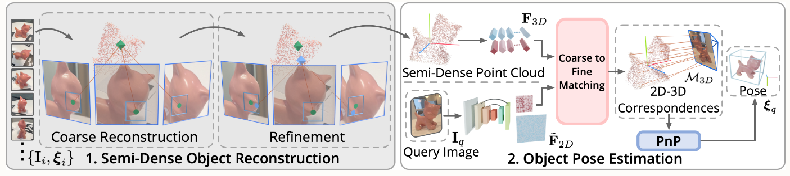
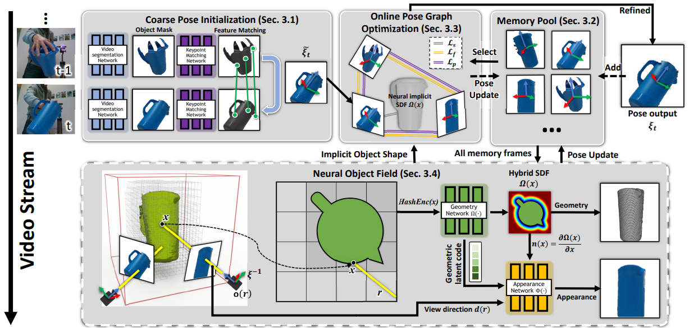
Reconstructed Results
The core of the project involves integrating depth maps into a volumetric grid. Below are reconstructions of scenes and synthetic objects.
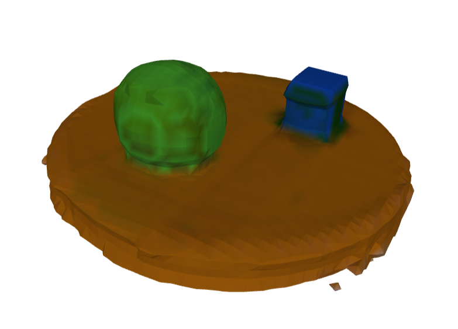
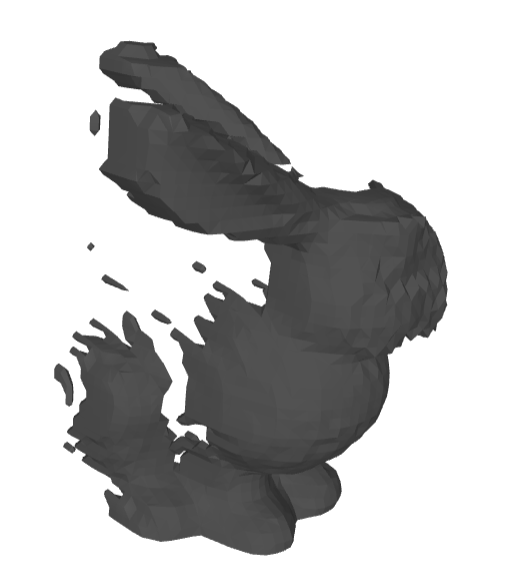
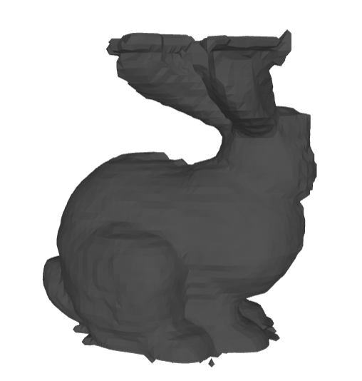
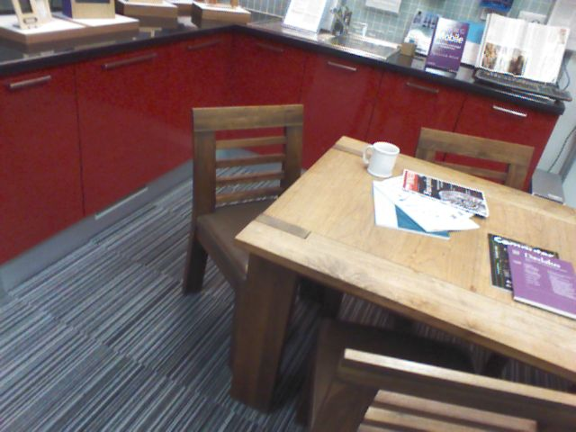
Methodology: TSDF Fusion
Each voxel stores a signed distance $d$ to the nearest surface, truncated to $[-t, t]$. The update rule for a voxel's TSDF value ($t_d$) and weight ($w$) is a weighted average:
w' = w + w_new
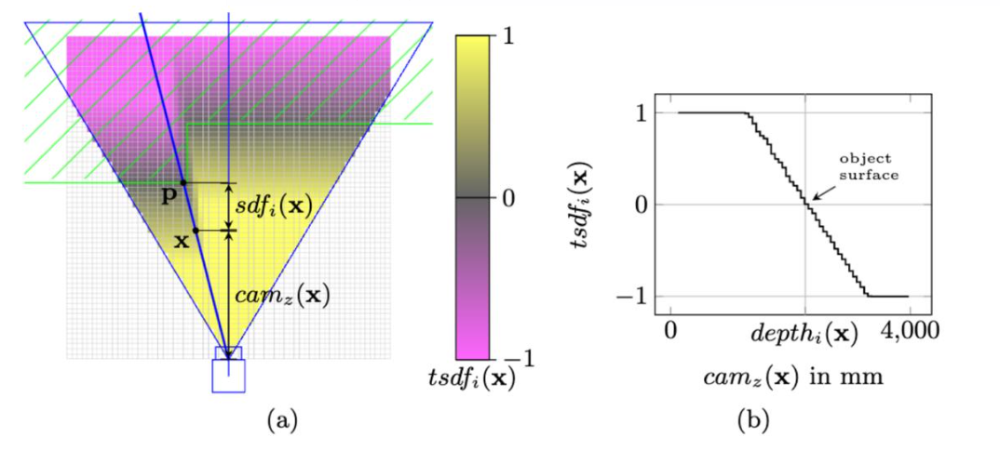
Using CUDA, we optimized voxel updates and mesh generation steps to ensure real-time performance even with high voxel resolutions.
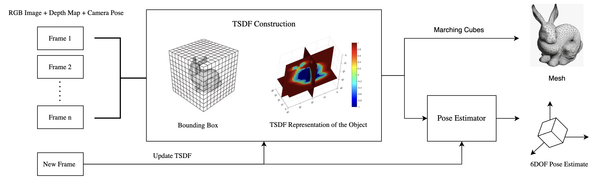
6-DoF Pose Refinement
After estimating an initial pose via nearest-neighbor search, we apply refinement:
- Epipolar Geometry: Rectifies misalignment between frames.
- Differential Rendering: Minimizes the discrepancy between rendered silhouettes and observed data via backpropagation.
Datasets
Experiments were conducted on the 7-Scenes dataset, synthetic Blender models, and Gazebo simulations of dynamic objects (SUV models).
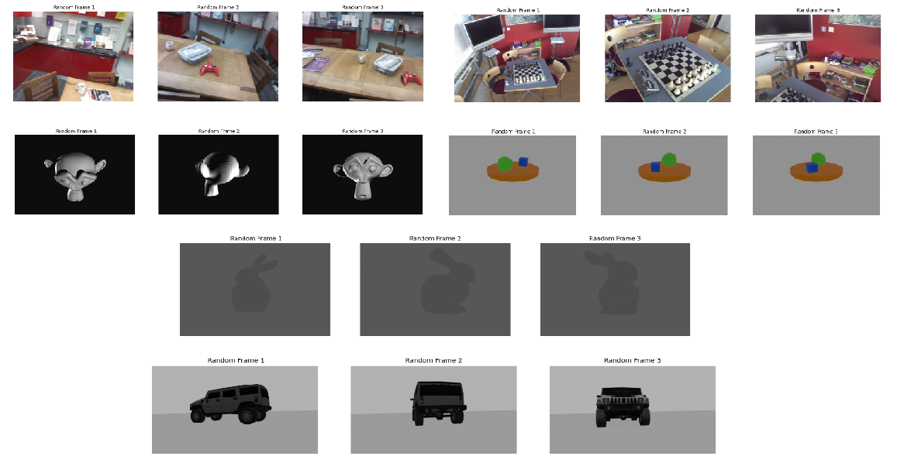
Performance & Benchmarks
The GPU implementation achieved substantial speedups (up to 1000x) over CPU-based methods.
| Dataset | Frames | Time (s) | FPS |
|---|---|---|---|
| Stanford Bunny | 500 | 1.68 | 296.67 |
| Suzanne | 500 | 0.45 | 530.74 |
| Table Scene | 500 | 1.68 | 296.67 |
Hyper-parameters & Methods
Comparison between Marching Cubes and Occupancy Dual Contouring, along with voxel size and truncation experiments.
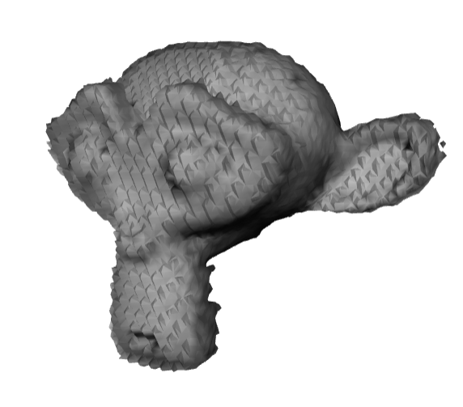
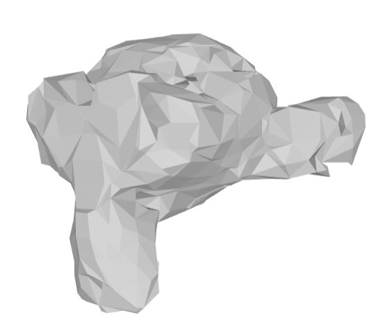
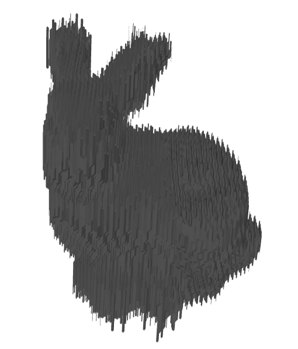
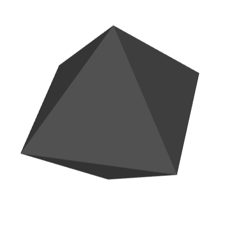
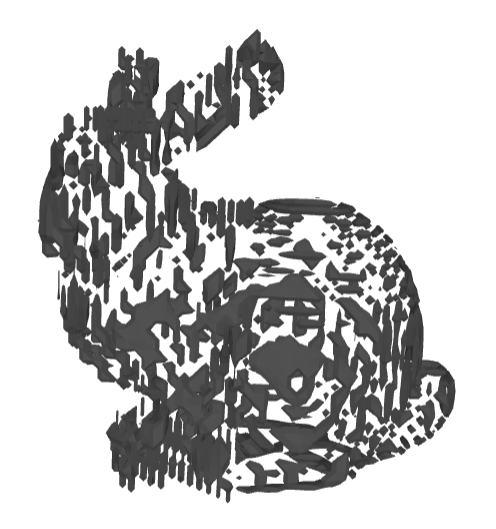
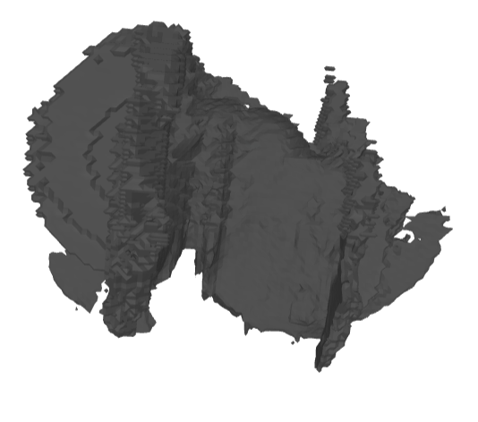